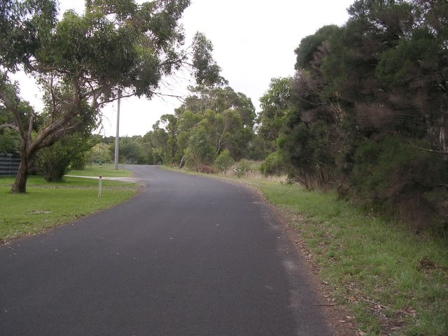
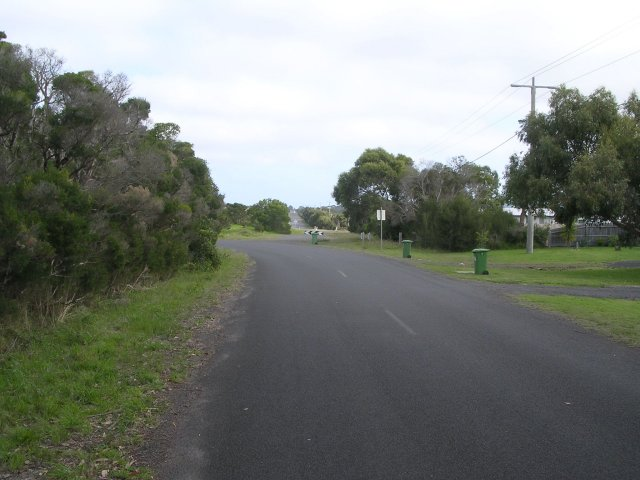
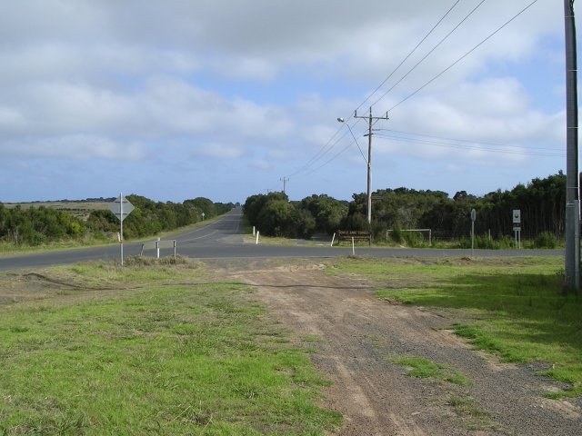
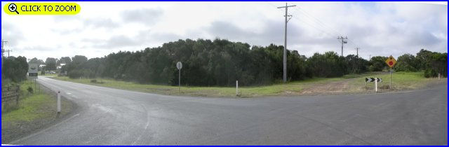

Numbers on the map represent the location where the photographs were taken. Scroll down to view the photographs.
Phillip Island (1928-35 Grand Prix circuit) - Gentle Ann corner to Hell corner.
|| Contents || Berry's Beach Rd. to Phillip Island Rd. | Gentle Ann Corner to Hell Corner || Home ||
Numbers on the map represent the location where the photographs were taken. Scroll
down to view the photographs.
Return to racingcircuits.net's Photo Archive Main Index

8A - Looking back, the original road alignment came out at black and white
sign. This section is now called Gap Road.

8B - 180° from previous photo.

9 - Gentle Ann corner.

10 - Gentle Ann corner. [Click here to zoom in]

11 - Ventnor Beach Road.

12 - Ventnor Beach Road.

13 - Hell corner. [Click here to zoom in]
| << PREVIOUS PAGE |
Photographs and Text ©Neil Fackerell. Reproduced here with kind permission.